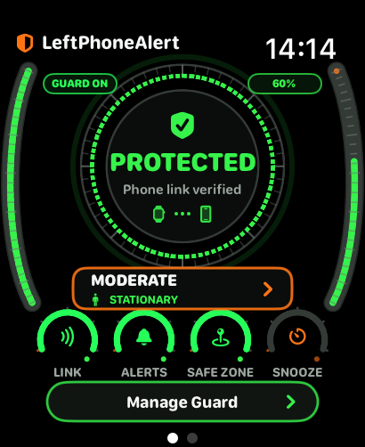
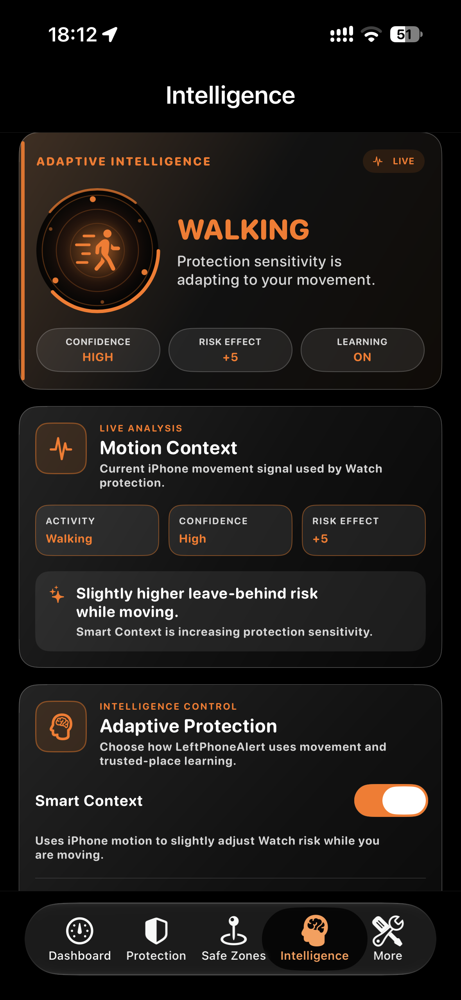
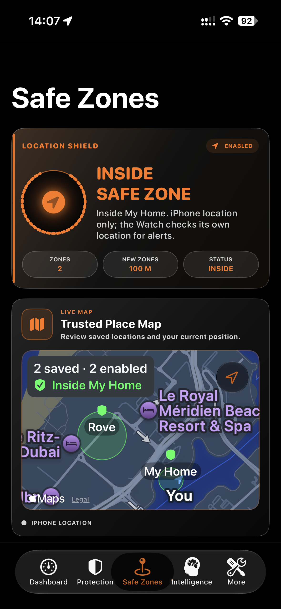
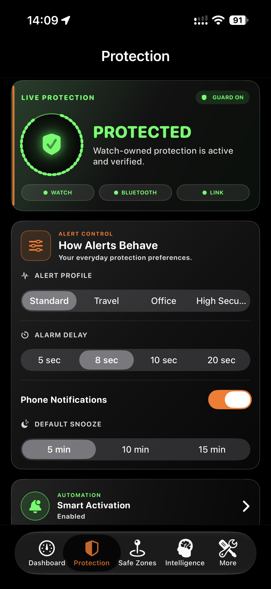

iPhone + Apple Watch
Life moves fast.
Keep your
phone close.
Get a heads-up on your Apple Watch if you leave your iPhone behind. Clear alerts, smart sensor technology and controls that fit the way you move.
Available on the App Store · One purchase. No subscription.


The everyday moment
Coffee finished.
Phone forgotten?
A familiar moment, a helpful heads-up. Watch our short film featuring the real LeftPhoneAlert Watch interface and alert.
Get LeftPhoneAlert35-second film. Café scenes are illustrative. The real Watch footage demonstrates an alert when the link between the Watch and iPhone is interrupted; actual alert timing varies.
Your Watch takes the lead
A glance.
A heads-up.
A little less worry.
Check your protection, get a heads-up if you leave your iPhone behind and see your Safe Zones. Right where you need them.
Protected dashboard — the actual Watch interface.
Intelligence that moves with you
Smart sensor technology.
Everyday intuition.
Smart Context uses movement information to adapt protection sensitivity. Tune activity sensitivity and Learning Mode to make the experience your own.
Movement-aware protection.
Another layer of personalisation.
Adjust how the app responds.


Familiar places. Fewer interruptions.
Make room
for your Safe Zones.
Home. The gym. A favourite place. Name your zones and choose the size that suits each location. Eligible alerts are suppressed when the app confirms you’re inside an enabled Safe Zone.
Available radius settings. Location accuracy and confirmation affect Safe Zone behaviour.
How Safe Zones workQuick alerts. Your settings.
Set the pace.
Keep the control.
Choose a short alarm delay, pick an alert profile and set your preferred Snooze duration. Highly customisable protection, built around your day.
01 Adjustable alarm delay
02 A choice of alert profiles
03 Snooze when you need it
Actual alert timing also depends on connection detection, recovery checks, system delivery and your settings.

Designed for iPhone + Apple Watch
Smart protection.
One simple purchase.
US$4.99 one-time purchase
No subscription. Local App Store prices may vary.
Download on the App StoreRequires a compatible iPhone and paired Apple Watch. iPad is not supported.
Questions? Get in touchA few useful answers
Good to know.
Do I need both an iPhone and an Apple Watch?
Yes. LeftPhoneAlert is designed for your iPhone and its paired Apple Watch. The Watch provides protection status and alert controls; the iPhone supports setup and configuration.
Should I leave the iPhone app in the background?
Yes. Open the app, complete setup, then leave it in the background. Avoid swiping it away from the app switcher. Force-quitting can interrupt communication and background recovery; reopen it if you have done so.
Will I always receive an alert immediately?
No fixed alert time is guaranteed. Your configured delay is one part of the process. Detecting an interrupted link between your Watch and iPhone, recovery checks, operating-system delivery, Safe Zones and Snooze also affect whether and when an alert appears.
Where can I get help?
Visit our Support page or email leftphonealert.support@gmail.com. Include your app version and a brief description of what happened.